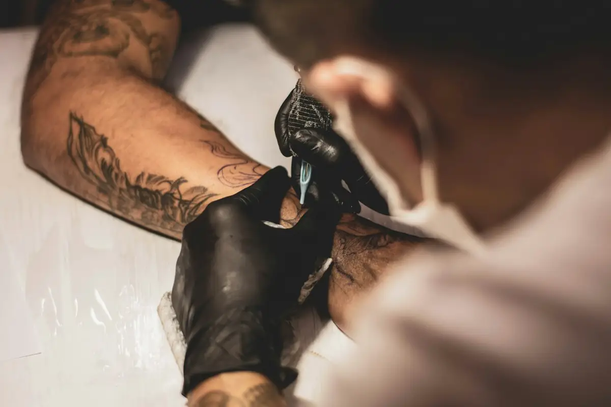

Fine-line ideas
A small piece with a considered line and placement.
Custom designs and selected flash, with time to discuss placement, scale and what the piece means to you.
Find your direction ↓


An illustrative collection. Open an image to take a closer look.
A small piece with a considered line and placement.
An organic starting point to develop in consultation.
An original idea shaped around your reference and placement.
Fictional demo: images are illustrative stock references. Any prices, schedules and listings shown are examples, not live offers.

Share the idea, approximate size and placement. Consultation, suitability, studio policies and aftercare are discussed directly.
Send a clear photograph and your idea so the artist can assess what may be possible.
Share the idea, approximate size and placement. Consultation, suitability, studio policies and aftercare are discussed directly.
This is a fictional design demo. The form previews the enquiry flow and does not send or store your details. Use the link to Ruhaan to discuss making this design your own.
Share the idea, approximate size and placement. Consultation, suitability, studio policies and aftercare are discussed directly.
Try this form with sample details. It previews an enquiry only—nothing is sent, stored or booked.
Ask Ruhaan for this website ↗